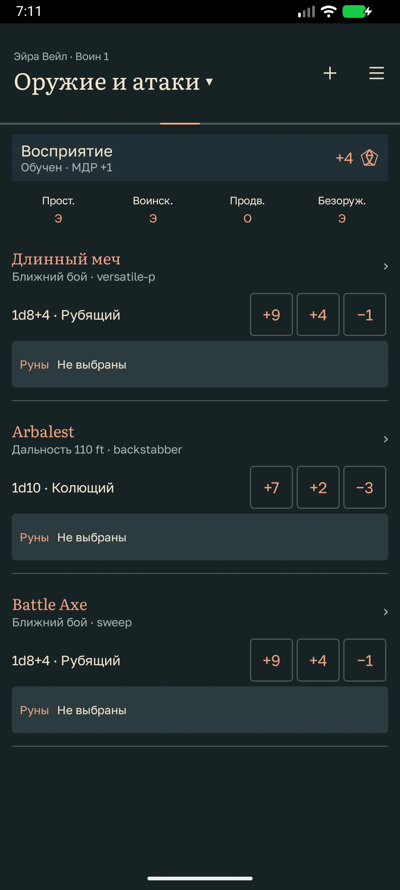
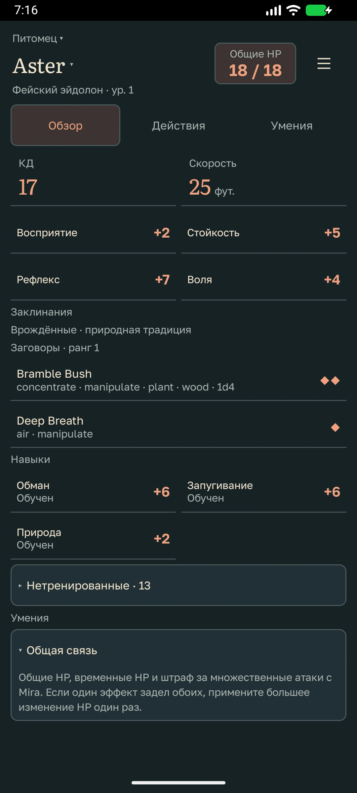

Pathmaid · Лист персонажа Pathfinder 2e
Сначала герой.
Потом цифры.
Длинный меч, очки здоровья и любимое заклинание — соберите на одном экране всё, что нужно вашему герою за столом.
Тилта, а что умеет Pathmaid?
Это лист персонажа для Pathfinder 2e на Android. Можешь собрать героя прямо здесь или перенести готового из Pathbuilder по JSON или ID.
Перед игрой собери «Мой экран» под себя. Положи рядом меч, здоровье и любимое заклинание. А когда мастер скажет «твой ход», нажми на меч — я брошу d20 и покажу урон.

-
Билд героя ↗

Выбирай родословную, класс и способности. В листе видно, что ещё осталось выбрать на каждом уровне.
-
Заклинания ↗

Видно, что подготовлено на сегодня и какие ячейки уже потрачены. Из книги можно сразу бросить урон.
-
Оружие и атаки ↗

У каждой атаки свой модификатор. Нажми на нужную — получишь бросок и урон выбранного оружия.
-
Питомцы и эйдолоны бесплатно ↗

Добавь питомца или эйдолона к своему герою. У каждого свой лист, а эйдолон делит запас здоровья с призывателем.


В планах · Связь с мастером
Мастер, приём!
Мы хотим связать лист игрока с Pathmaid мастера. Ты сможешь отправить сигнал со своего телефона, а мастер увидит его у себя за ширмой.

Ебать Google Арасаку
Нам пока не хватает тестировщиков для выхода в Google Play. Когда соберём группу и проверим сборку, отправим приложение на публикацию. Сейчас его можно установить из APK.

Установка
Возьмите героя
на следующую игру.
Для большинства телефонов подходит ARM64. В текущем релизе приложение называется PathMaid M.